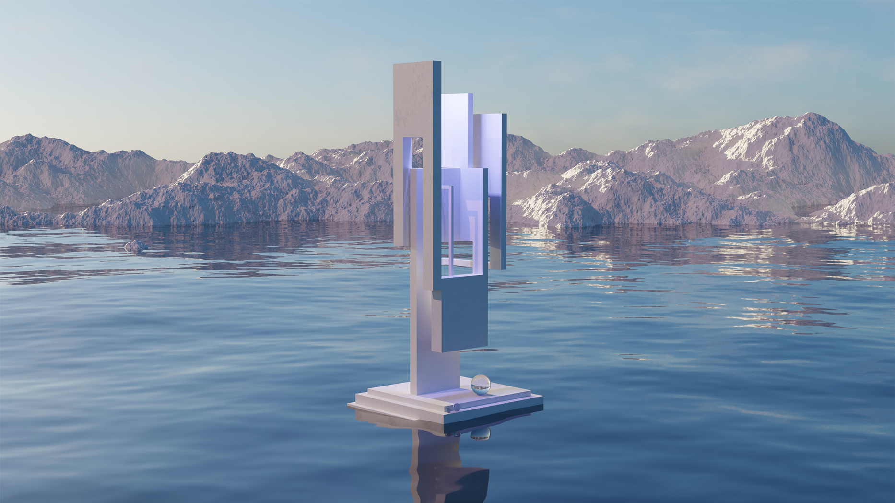

SCROLL
현실 세계와 같은 사회적 경제적 활동이 통용되는 3차원 공간으로 표현되는 메타버스와 장례식 , 추모관을 접목하였습니다.
자사만의 특허기술을 기반으로 AI 기술과 메타버스 기술을 접목하여 살아생전 고인과 반려동물의 목소리를 재구현하여 보다 현실감 있는 추모공간을 제작합니다.
기르던 반려동물 또한 AI 음성 인식 기술로 저장해 메타버스 추모관에 그 기술을 탑재하여 주인이 부르면 실제로 살아 있을 때의 울부짖음으로 주인을 부를 수 있습니다.
또한 메타버스 추모관에서 기존에 길렀을 때의 옷을 입히기도 하고, 음식을 주어먹일 수도 있습니다.
애니멀 추모관 입구
애니멀 추모관 실내
애니멀 추모관
놀이터 및 펫샵
추모관의 다양한 테마, 상차림, 종교별 테마관 아바타, 의상, 음식 등 직계 가족이 직접
구성하여 지낼 수 있도록 설정 할 수 있습니다.
추모관에 있는 모든 테마, 상타림, 종교별 테마관 아바타, 의상, 음식 등
직계가족이 직접 구성하여 지낼 수 있도록 설정 할 수 있습니다.
예시) 과일, 돼지고기, 소고기, 의상 공간 등등 모든 품목을 캐릭터화 하여 상품으로 구성
유가족 또는 고인의 종교에 따라 직접 종교테마를 선택하여 구매할 수 있습니다.
살아생전 고인과의 대화 내용들을 AI음성 서비스와 유품 전시실을 만들어 AI 메타버스 추모관에 탑재할 예정입니다. 동물 또한 음성을 클라우드 서버에 저장하여 AI 음 서비스 기반 애니멀 추모관에 탑재합니다. 메타버스 추모관 내에서 애완견들과 함께 놀고, 쇼핑도 할 수 있는 AI 메타버스 추모관을 기획,개발하고 있습니다.
부가적으로 고인과의 전화통화를 원할 때에는 고인의 목소리를 클라우드 하드 서버를 통하여 음성 인식 서비스를 실행하여 휴대전화의 고인의 기존 번호에 인식하며 지정된 날짜를 정한 뒤 통화를 할 수 있도록 할 에정입니다.